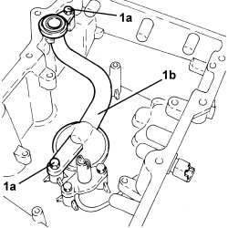

1084B28 ENGINE OIL INTAKE PUMP - R + R WITH CRANKCASE SUMP REMOVED
- Path
- Procedures > 10 ENGINE > 1084 ENGINE LUBRICATION > 1084B ENGINE OIL LUBRICATION CIRCUIT > 1084B28 ENGINE OIL INTAKE PUMP - R + R WITH CRANKCASE SUMP REMOVED
- Kind
- repair procedure (removal / refitting; the operation number is the code)
- Applies to
- engines: 2.2 JTS, 3.2 JTS; all production periods
- Interactive page
- https://sloeber94.github.io/elrnDB-aBrrSpdr/en/#/946001993
Applies to: engines: 3.2 JTS; all production periods
 Removing
Removing
 Refitting
RefittingOp. 1020A46 CRANKCASE OIL SUMP PARTITION - R.R. WITH CRANKCASE SUMP REMOVED
1. Undo the bolts (1a) and remove the engine oil intake (1b).

Applies to: engines: 3.2 JTS; all production periods
Refitting
Removing- Fit the engine oil intake in place and secure it using the bolts.
Op. 1020A46 CRANKCASE OIL SUMP PARTITION - R.R. WITH CRANKCASE SUMP REMOVED
Applies to: engines: 2.2 JTS; all production periods
Removing
RefittingOp. 1020A46 CRANKCASE OIL SUMP PARTITION - R.R. WITH CRANKCASE SUMP REMOVED
1. Undo the bolts (1a) and remove the clips (1b).
2. Remove the engine oil intake (2a) complete with O-ring (2b).

Applies to: engines: 2.2 JTS; all production periods
Refitting
Removing- Place the engine oil intake complete with a new O-ring back in its housing.
- Fasten the engine oil intake using the clips and the bolts.
Op. 1020A46 CRANKCASE OIL SUMP PARTITION - R.R. WITH CRANKCASE SUMP REMOVED